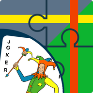

Version %VERSION%
coordinatejoker@gmx-topmail.de
Coordinate Joker is a Geocaching Add-On for Locus Map, but works also with other apps that can display waypoints from a gpx, kml, or kmz file.
Finally you made it to the pre-final after 3 hours and several miles. A final number to be determined: Count the planks of the bridge. Hey, where has the bridge gone? It was replaced by a pipe beneath the ground. What now ...? Look up the logs for potential telephone jokers? No, then I'd rather draw a line in my map, where the final could be located given the formula and missing x ...
But wait - Coordinate Joker will do it for you. Just enter the coordinate formulas and it will send the resulting waypoints to your preferred Geocaching app. With a bit of luck, one point will appear close to some path while the others may be far away. Then where would you look for the final? :)